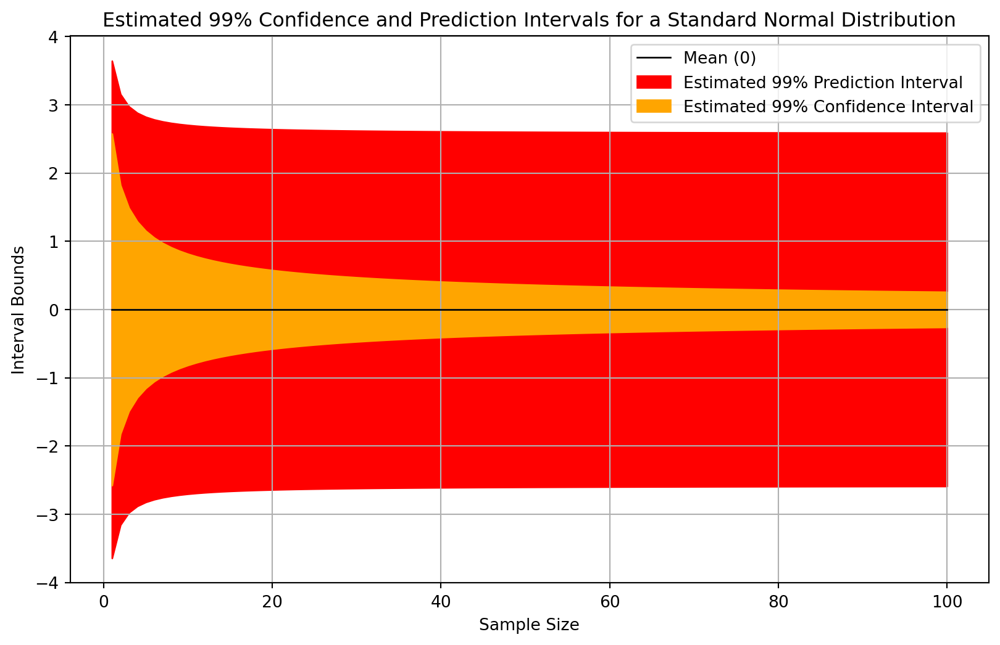
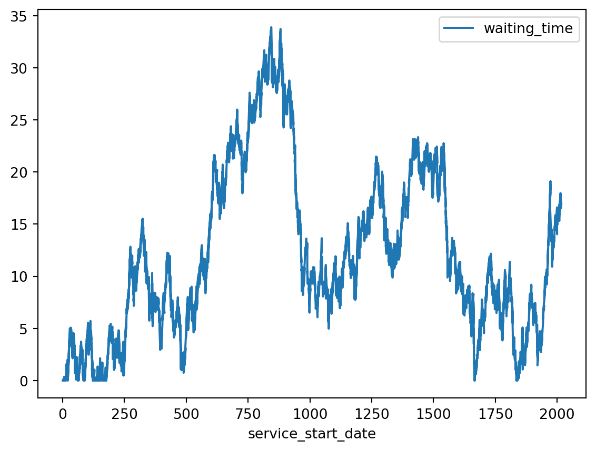
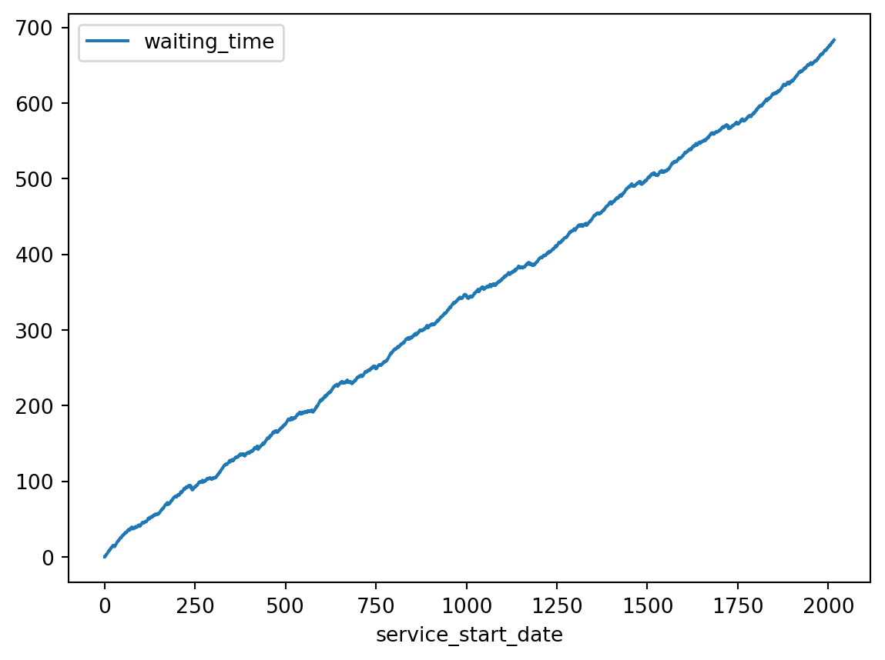
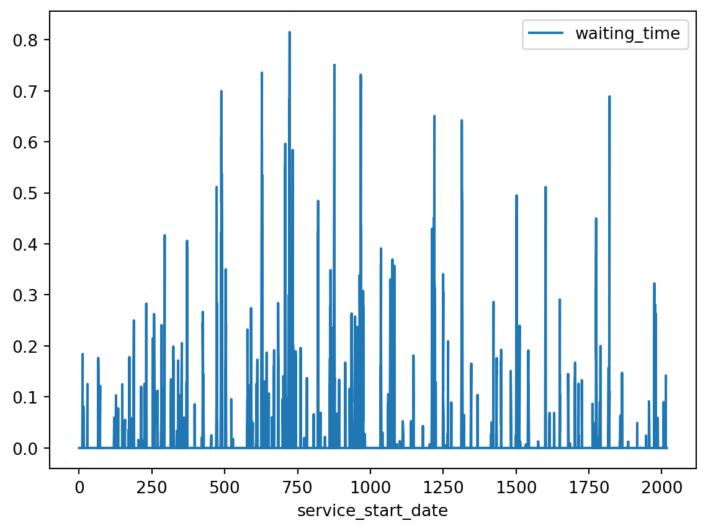
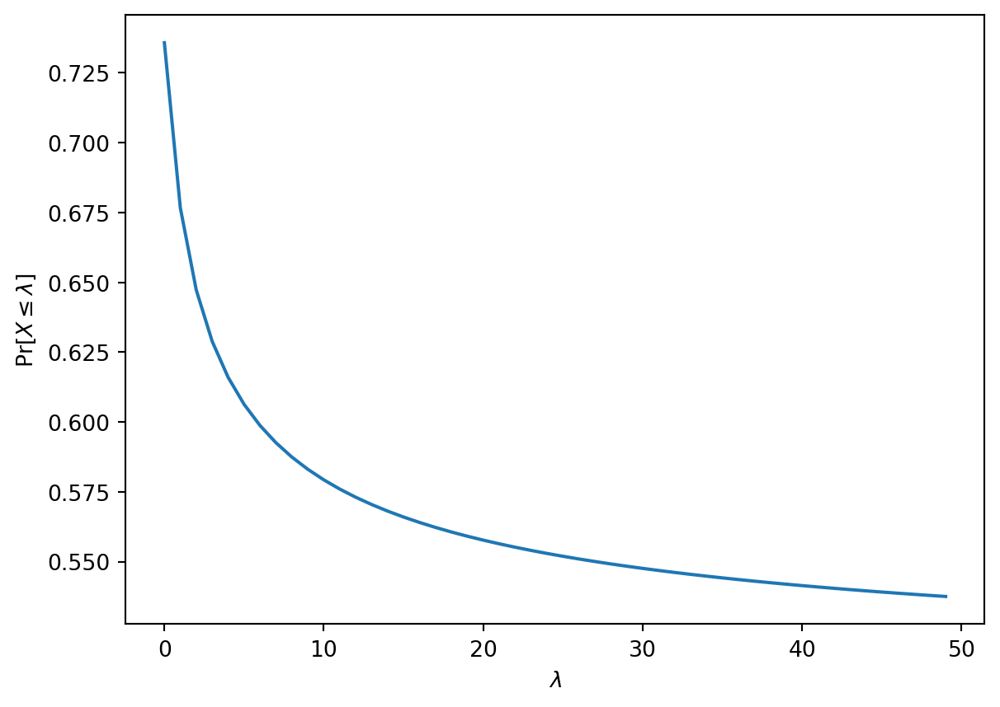

Why Averages Can Be Bad For Resource Allocation
Statistics
Poisson Distribution
Expected Value
Introduction
There are some upsides to using averages for resource allocation, but in this post I want to focus on some of the often-ignored or discounted downsides of using averages for resource allocation.
Resource Allocation
Resource allocation is the process of distributing available resources—such as personnel, equipment, time, or finances—across various activities, departments, or tasks within an organization. Effective resource allocation ensures that the right resources are directed toward the most critical tasks at the right time, which helps organizations achieve their objectives efficiently.
However, when organizations face a shortage of resources, it can lead to significant challenges, impacting their overall performance. For instance, in healthcare, resource allocation is particularly crucial because medical staff, equipment, and beds are often limited, yet demand for services can spike unexpectedly. A shortage of nurses during a pandemic, for example, may lead to longer wait times for patients and reduce the quality of care. Similarly, if essential medical equipment, such as ventilators, is in short supply during a health crisis, critical patients might not receive timely treatment, leading to worsened outcomes.
Outside of healthcare, industries like manufacturing and IT also face challenges with inadequate resource allocation. In manufacturing, if supply chain disruptions lead to a shortage of raw materials, production can halt, causing delays in delivering products to customers. In IT, an under-resourced server infrastructure can cause slowdowns or downtime, affecting businesses relying on continuous uptime for their operations.
By allocating resources effectively, organizations can mitigate risks, improve service quality, and ensure that they are prepared to handle both routine operations and unexpected challenges.
Reliance On Averages
Historically, averages—or conditional averages—have been a common method for allocating resources across various sectors. The idea is simple: by calculating the average demand for a resource over time, organizations can estimate the amount of personnel, equipment, or funding required to meet that demand. For example, a hospital may use the average number of patients admitted each day to determine the number of nurses needed per shift. In manufacturing, average production rates are used to plan labor schedules and material requirements. This approach has been attractive because it provides a straightforward, data-driven way to make decisions.
Conditional averages, which take into account specific factors such as time of day, season, or other conditions, can further refine this process. A hospital may allocate more resources to the emergency department on weekends, knowing from historical data that patient volumes increase during these periods. Similarly, retail businesses might adjust staffing levels based on the conditional average number of customers during holiday seasons.
Some Problems With Averages
Averages Are Not Outcomes
For practical decision making people usually care about outcomes, not abstract parameters like averages. These are not the same in general.
There are a variety of jokes available online about this distinction, including this classic (which I am unsure of its origin):
A mathematician, a physicist and a statistician went hunting for deer. When they chanced upon one buck lounging about, the mathematician fired first, missing the buck’s nose by a few inches. The physicist then tried his hand, and missed the tail by a wee bit. The statistician started jumping up and down saying “We got him! We got him!”
Lighthearted jokes like this can remind us that averages are not the same thing as outcomes, but in real applications of resource allocation the difference between having enough of something vs not can be the difference between life and death.
The distinction between averages and outcomes is accentuated with resources that come in discrete units such as the number of hospital beds because the average of a collection of counts is not usually a whole number. While the number of needed beds in a given day is going to be a non-negative integer, the average number of needed beds will often be a non-integer such as 9.7, 3.14, or 11.5.
When confronted with non-integer averages for discrete allocations that can only be integers we are often forced to change approaches. A common fallback when faced with this disparity is to round the estimated average to an integer. There are many different ways to round, including floor, ceiling, and nearest integer. There are tradeoffs among rounding methods. While they can often return our prediction back to a number which is also a valid outcome, they do not solve all of the other problems associated with averages.
Averages Can Impose Dubious Properties
Averages not only can take on values that are not outcomes, but further they can impose properties on the data that we have no good reason to suppose.
A common example of this problem is found in how people often analyze Likert-type data or similar ratings. This type of data may occur when there are ratings or rankings, which can be found in surveys such as customer satisfaction surveys or ratings by judges in competitions or ratings from managers for performance reviews. If customers are unhappy with some aspect of a service or good provided to them, getting feedback can be valuable for learning what changes should be made. The combined verdict of judges can indicate who is assigned prizes. The ratings from performance reviews can indicate how to financially reward employees for providing value, or to identify what resources an employee needs in order to improve their performance.
The basic issue with taking averages of ranks is that they are ordinal but not interval scale, whereas taking an average requires interval scale data. An interval scale would allow us to say that a rating of 4 is twice as big as a rating of 2, but there is often no factual basis to make such claims. Similarly, we would be forced to accept ridiculous propositions like that three ratings of two are (additively) as good as a single rating of 6. Sometimes there’s a premium to being the best, and no number of low-rank options would make up for it.
When provided with ordinal data we should prefer methods that do not require the data itself to be treated “as-if” it were interval scale. There are methodologies such as the polytomous Rasch model or the similar ordinal regression approach.
While this issue can become more subtle (e.g. see here for some more discussion), it doesn’t make sense to impose an interval structure.
Averages Hide Uncertainty About Outcomes
I have rarely heard phrases such as “the average accounts for the uncertainty”, but nonetheless this is believed by some. While that is sort of true in the sense that the average, or more formally the expectation, is a function of the outcomes and the probabilities, the phrasing is substantively false.
Averages are often used as an attempt to ignore the uncertainty of the outcome while preserving something about where most of the outcomes are weighted (by the probabilities) to be around. Roughly locating the ‘center’ of the outcomes in this way is a compression that loses information about the uncertainty rather than preserves it.
Realizing that averages ignore a lot of information about the uncertainty, some have turned to confidence intervals (or sometimes credible intervals) around their averages or conditional averages. Confidence intervals are widely misunderstood and misused for other reasons, but they are not even the right tool for the job here.
Using confidence intervals to quantify the uncertainty in the outcome variable is a categorical mistake as confidence intervals pertain to estimates of population statistics such as location parameters, not to the uncertainty of outcome variables in our domain problem. The more appropriate form of interval in most cases is the prediction interval, which can be about outcome variables. When confidence intervals are conflated with prediction intervals we can get a false sense of, dare I say, “confidence” in our predictions about the outcome. Prediction intervals are usually wider than confidence intervals for the average of a given random variable.
Consider a computational example where we estimate the confidence interval for the mean and the prediction interval of a standard normal variable at different sample sizes. Figure 2 illustrates such estimates.
You can see from the above figure that the estimates of the confidence intervals slowly narrow, whereas the estimates of the prediction intervals tends to stabilize. This is not a coincidence. As our sample size increases indefinitely we should expect that the confidence interval will narrow indefinitely towards the closed interval \([0,0]\). The prediction interval will also approach constant bounds, but this interval will in most cases have non-zero width even with an infinite sample. Loosely speaking, the confidence interval is describing our estimation procedure whereas the prediction interval is describing the outcomes.
Let’s consider a less abstract example now. Suppose I want to know about the heights of randomly-selected people. The average human height can be computed from samples of human heights, and a confidence interval for that average can be computed. The confidence interval, assuming an infinite population, will converge such that it has a width of zero at any valid level of confidence. Would it really make sense that the distribution of human heights should be narrowing due to measuring more human heights? Assuming a simple random sample and stationarity, definitely not.
Averages ignore uncertainty about outcomes, and confidence intervals are not a solution to this problem.
Flying Too Close to Average Demand
Allocating service supply close to average demand can seem like a smart, efficient use of resources—much like Icarus flying ever higher toward the sun on his wax wings, believing he could soar with ease. The myth tells us that Icarus, ignoring his father’s warnings, flew too close to the sun, causing the wax in his wings to melt and sending him plunging into the sea.

Similarly, when decision-makers allocate resources to equal average demand, they may feel like they’re operating with maximum efficiency, avoiding unnecessary costs. However, this strategy can be perilous. Like Icarus, who failed to account for the sun’s intensity, an organization service stability “melting” under the pressure of unexpected demand surges or rare events. If a hospital staffs its emergency department based on average patient numbers without accounting for common fluctuations in demand, or if a call center schedules operators based only on average call volume, a sudden surge could overwhelm the system, leading to long wait times, burnout, or a decline in service quality.
In both cases, the illusion of stability masks the vulnerability of the system. Just as Icarus’ wings could not withstand the intensity of the sun, resource allocations set too close to average demand cannot withstand the inevitable variability and shocks that real-world systems encounter. The lesson: flying too close to the demand “sun” might lead to operational failures when stress exceeds what the average can handle. Allocating additional buffer resources is like heeding Daedalus’ advice, ensuring a safer, more sustainable flight.
Let us consider a computational example to show how allocating the average service level to exactly match demand goes wrong. Suppose a healthcare service that looks like the state diagram in Figure 4.
stateDiagram
direction LR
[*] --> 🚑Arrivals
🚑Arrivals --> ⏳Queue
state ⏳Queue {
direction LR
🤒 --> 😷
😷 --> 🤕
}
state 🏥Servers {
direction LR
👨🏾⚕️🧠
👩🏾⚕️🩺
}
⏳Queue --> ⚕️Service_Discipline
⚕️Service_Discipline --> 🏥Servers
🏥Servers --> 🚘Departures
🚘Departures --> [*]
New arrivals enter the service and go into a waiting area, which I have termed Queue in the diagram. The service discipline is a rule or business process which decides the order that patients get served. When a server, such as a nurse or doctor, becomes available they will begin service on the next patient. Patients tha have been served also depart from the system.
In order to make a numerical example we’ll need to make some further assumptions. Suppose that the interarrival times of demand arrive according to an exponential distribution with a rate parameter \(\lambda\), and the duration of each service also follows an exponential distribution with a rate \(\mu\). The fact that these variables follow probability distributions is why there are fluctuations in the behaviour of this hypothetical service. Note that other sources of variaion tend to make the stability no-better-off or even worse, rather than better.
In simple queueing systems like the one we have described here, the stability can be determined by a simple inequality. First, define the utilization \(\rho\) to be
\[\rho \triangleq \frac{\lambda}{s \mu}\]
where \(\lambda\) is the arrival rate, \(\mu\) is the service rate, and \(s\) is the number of servers. Here the notion of servers is a little abstract as it generally referred to how many patients can be receiving service simultaneously and independently, rather than a literal count of people. But for our purposes here we will take the number of servers \(s\) to intuitively be the number of people available to provide medical services.

When we exactly match the average supply of a service with the average demand for that service we create a system which is instable. The waiting times will meander up and down over time. That description might sound like things will even out over time. After all, doesn’t some ups combined with some downs cancel out in the long run? Unfortunately, no. In fact, mathematicians have shown that when \(\rho \approx 1\) then the waiting times will tend to increase over time. In such cases any apparent improvement in the waiting times will only be eventually replaced by an even bigger increase in the wait times.

Now let’s consider what it would look like if there were 4 servers, and therefore should be stable. Figure 7 shows the results of simulating this case.

The key insight is that when a process has random variation in the completion of its steps and at least some of the steps are dependent on each other, then variability cannot be assumed to “average out”.
Averages Are Not Usually Risk Conservative, but People’s Judgements Are
When we look at how people address real-world risk, especially about things that personally impact them, you may not that they do not base their decisions around the average or even the most probable outcome. We require workers to follow standard operating procedures and wear personal protective equipment not only for situations in which
Suppose the amount of surgeons we need on a given day, which we will denote \(X\), follows a Poisson distribution:
\[X \sim \operatorname{Poisson}(\lambda)\]
where \(\lambda\) is the rate parameter. As it happens to be the case with a Poisson distribution, its parameter \(\lambda\) is also the population average. That is, the average number of required surgeons is \(\lambda\). We can plot the probability that the needed number of surgeons is less than the average \(\Pr [ X \leq \lambda ]\) for different values of \(\lambda\) the cumulative distribution function of a Poisson distribution.

You can see from the plot above that the smaller the average number of required surgeries is, the higher the probability that allocating a number of surgerons close to the average will be sufficient.
If we choose to allocate zero surgeons then the probability of having enough surgeons (i.e. not needing to perform any surgeries) is given by \(e^{-\lambda}\). But how large does the probability of having enough resources allocated need to be in order to say that “we have enough”? There is not a purely mathematical answer to this question in practice. Rather, an acceptable level of risk has to be defined.
Why Are We Still Using Averages?
Despite the known pitfalls of using averages for resource allocation, many organizations and industries continue to rely on them. This practice, while not always the most effective in complex or uncertain environments, persists for several reasons, ranging from tradition to simplicity and even cost considerations.
Simplicity
One of the primary reasons we continue using averages is their simplicity. Calculating an average is straightforward and easy to understand. Many decision-makers are more comfortable working with simple metrics like averages rather than more complex methodologies.
Tradition or Institutional Inertia
Additionally, tradition plays a significant role. Many industries have long relied on historical averages for planning, and changing those practices can be difficult. The institutional inertia of doing things “the way they’ve always been done” can make more sophisticated approaches seem unnecessary or too complicated.
Some organizations use the data-driven estimates of resource need only as a starting value for bargaining or negotiating for those resources. This is more common when there is some sort of organizational structure that implies such negotiations, or where there are contractual agreements to be made or clarified.
In fields like healthcare, education, and public services, there is often a long-standing reliance on averages, built over years of practice and established norms.
Confidence in Predictability
Sometimes the average really is close enough to all observations. This can happen in areas where there is a large degree of control over the system being measured, such as the behaviour of some electronic components where the manufacturing processed can be carefully standardized. While it isn’t ideal, it is pragmatic. If something is predictable enough that an average is always close enough to the right answer, then ignoring the uncertainty might work.
Confidence can be overconfidence in some contexts where there is an illusion of predictability. Decision-makers may assume that if they’ve planned for the average case, they’ve accounted for most of the risks.
This mindset is particularly dangerous in environments like healthcare or disaster response, where small probability events (like pandemics or natural disasters) can have massive consequences. But the ease of relying on averages offers a kind of psychological comfort: it’s easier to think you’ve covered your bases by using historical data than to admit the uncertainty and volatility of the real world.
Lack of Awareness of Alternatives
For many organizations there’s a simple lack of awareness of better alternatives. Many managers may not be familiar with risk-based or probabilistic models, simulations, or queuing theory—approaches that could better handle modelling fluctuating demand.
This knowledge gap perpetuates reliance on averages because decision-makers aren’t aware of tools that could better allocate resources by accounting for uncertainty and variability.
Perceived Cost of Alternatives
Even when organizations are aware of alternatives, they may shy away from them because of perceived costs or difficulties. Methods like probabilistic modelling, quantile regression, or conformal perdiction require specialized expertise, tools, and software that organizations may not have readily available.
These advanced techniques can feel intimidating, especially when teams are accustomed to simple, average-based forecasting. There’s often a sense that moving to more sophisticated approaches will require extensive training, new technology investments, and an overhaul of existing processes—leading to reluctance to adopt them.
Pressure for Short-Term Efficiency
Many organizations face short-term pressures—whether from shareholders, budget constraints, or leadership—that force them to prioritize immediate efficiency over long-term preparedness. In these cases, resource allocation based on averages is favored because it appears to reduce “waste” and optimize day-to-day operations, even if it leaves the organization vulnerable to unpredictable events.
A more conservative, risk-based approach might be safer in the long term, but the short-term efficiency pressures often make it harder to justify maintaining excess capacity or using more complex predictive models that require additional resources.
Quantifying Variability Can Be Difficult
Capturing the full range of variability in demand or resource usage can be difficult to quantify. While averages offer a simple metric, capturing extremes and rare events often requires advanced statistical modeling. In some cases, it’s difficult to even identify the appropriate distribution to model demand—let alone run simulations based on that model.
This lack of clarity around how to account for variability further entrenches the use of averages as the “best-available” approximation, especially in the absence of tools that can model these dynamics accurately.
Cogntive Heuristics
The reliance on averages for resource allocation can be explained by cognitive heuristics, which are mental shortcuts people use when they face complex or uncertain problems. When individuals or organizations don’t fully understand how to solve a difficult problem—like predicting fluctuating demand—they might unconsciously resort to solving a simpler, related problem that feels more familiar. In this case, the complex problem is about how to handle the variability, risk, and unpredictability of demand, but the simpler, more familiar problem that people default to is finding the “average” demand.
Heuristics help people make quick decisions without needing to gather and process all the information. These shortcuts are useful in many situations but can lead to oversimplified solutions. When applied to resource allocation, these heuristics can lead decision-makers to rely on averages because:
Familiarity Bias: Averages are easy to calculate and familiar to most people. They provide a sense of certainty and simplicity, making decision-makers feel like they’ve arrived at a logical conclusion, even though they may not fully address the problem of variable demand.
Substitution Heuristic: Instead of tackling the harder question—how to allocate resources given the uncertainty of demand—people unconsciously substitute it with an easier question: “What is the average demand?” While this seems like a reasonable approach, it sidesteps the challenge of planning for variability, rare events, or peak demand.
Conclusions
Although averages are still widely used for resource allocation, they fail to account for real-world variability and uncertainty. The simplicity, cost efficiency, and tradition associated with averages make them attractive, but they often leave systems vulnerable to fluctuations in demand or unexpected events. In high-stakes environments like healthcare, transportation, or emergency services, relying on averages can be dangerous.
As organizations gain access to better data and more sophisticated tools and methods, there’s an opportunity to move beyond averages and adopt risk-aware approaches that provide resilience in the face of uncertainty. By acknowledging that the world is far more unpredictable than averages suggest, organizations can build systems that are not just efficient but adaptable and prepared for the unexpected.